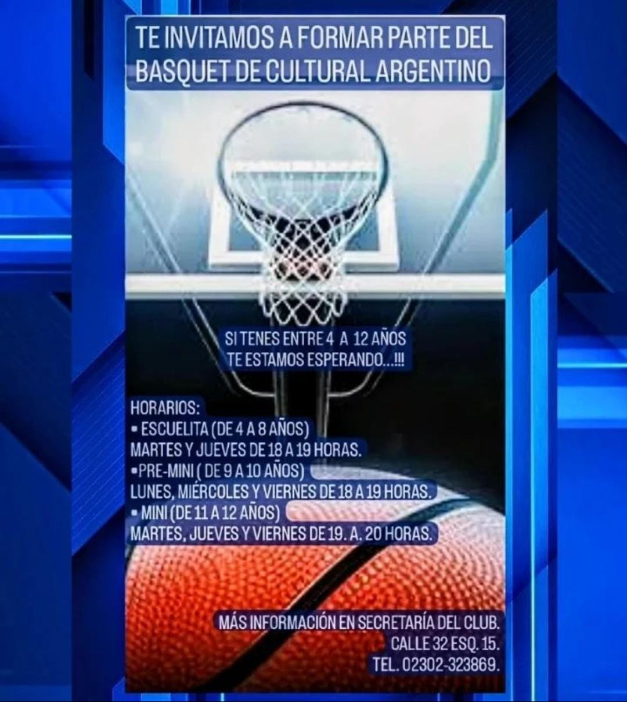
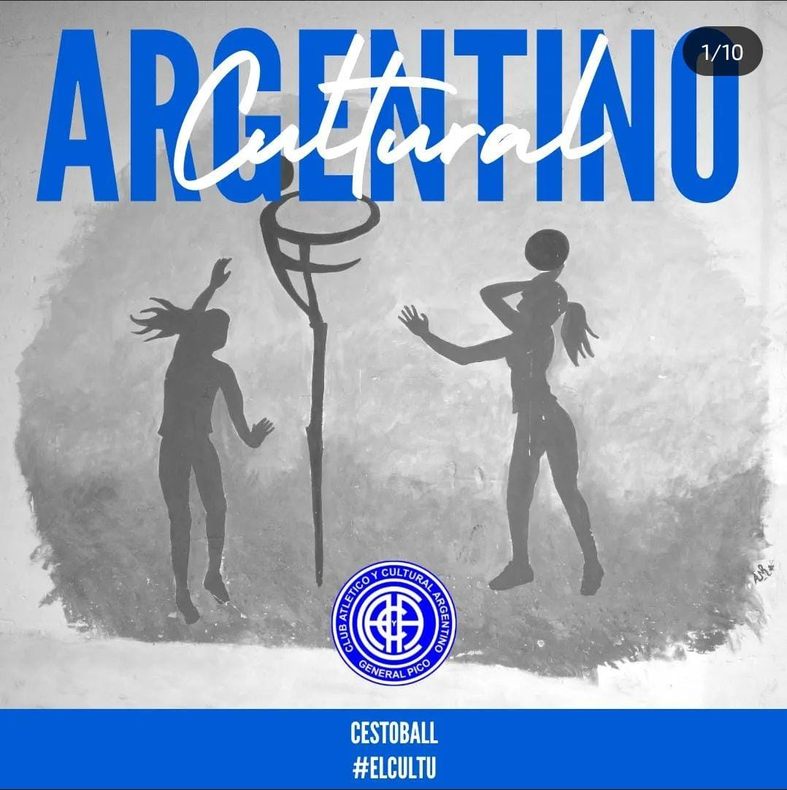
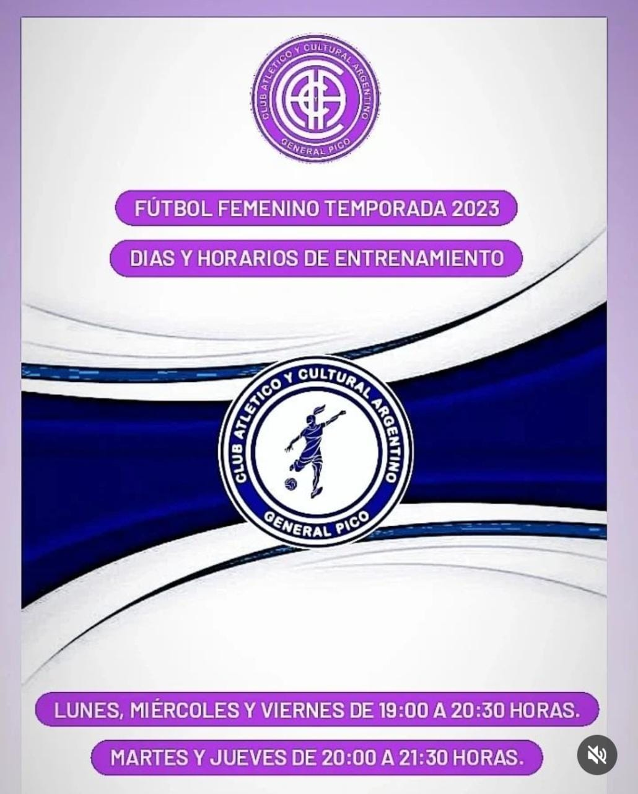
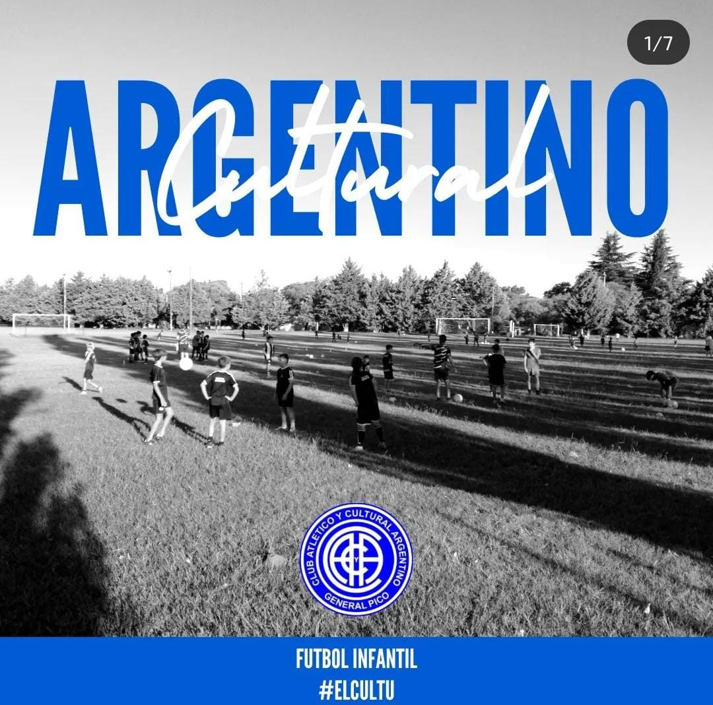

El 1 de agosto del año 1920, nacía sobre la calle 32 n°750, el amado Club Atlético y Cultural Argentino, que en el día de su fundación fue bautizado con el nombre de Football Club Argentino.
|

Basquet |

Cestoball |
|

Fútbol Femenino |

Fútbol Infantil |